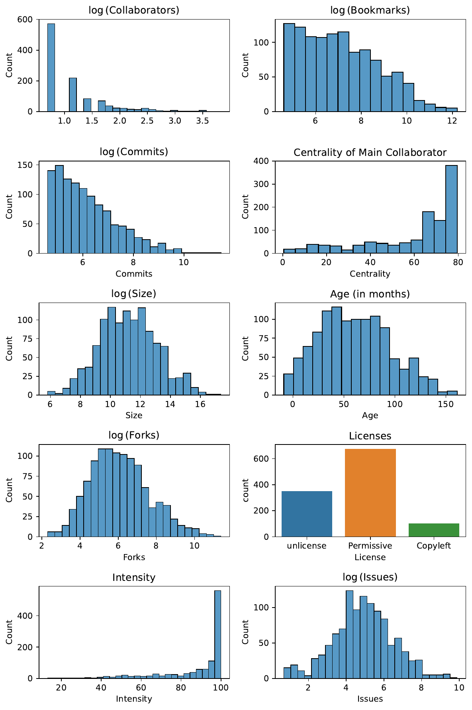
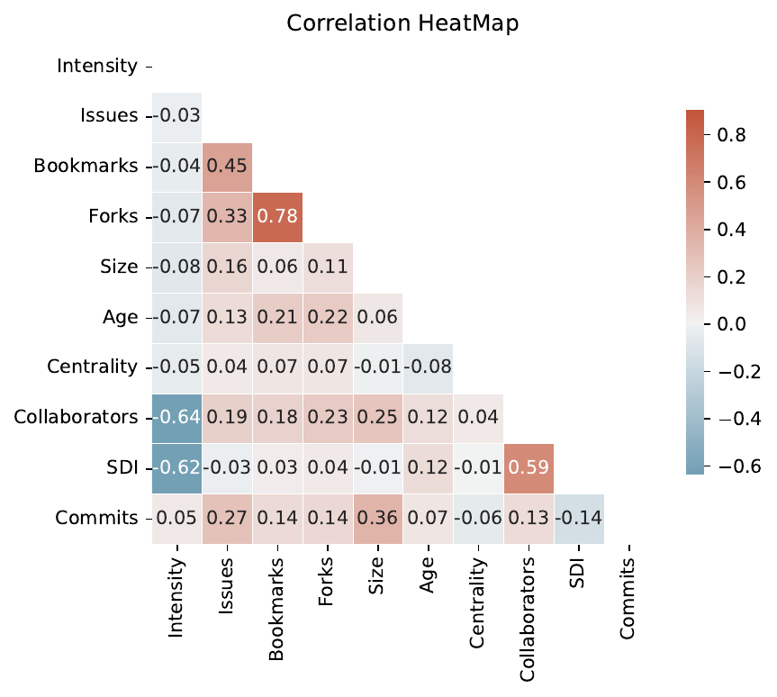

Introduction
Open-Source is an approach to how software is licensed and created, allowing anyone to inspect, modify, and improve the underlying source code (Perens 1999). Open-Source Software (OSS) originated first within universities when software was freely distributed among scientists during the early 1950s (DiBona, Ockman, and Stone 1999). This approach stands in contrast to proprietary software development, whose source code is only available to the organization which owns the underlying intellectual properties (Scott 2003). OSS was first formalized by Richard Stallman in 1984 as Free Software under the GNU Project, aimed to provide a licensing framework for software created to be freely distributed (Perens 1999). The Free Software Foundation later adopted this definition as the specification for what is now commonly referred to as open-source software (Debian Foundation 2023).
The number of OSS projects has grown exponentially as the number of projects surged between 1990 and 2006 (Deshpande and Riehle 2008). While OSS was mainly driven by independent developers donating their time and skills in the early years, commercial organizations are increasingly expanding their contributions. Specifically, developers paid by large information technology (IT) firms, such as Microsoft or Google, are often dominating OSS projects (Stephens 2021). However, despite this significant growth over the last decade, there are some indications that this growth has been slowing in the last few years (Figure 1).
{kind=link}
Nevertheless, increasingly corporations have adopted open source practices as a valuable addition to their strategic toolkit (Ahmad 2021; Bonaccorsi et al. 2007; Germonprez et al. 2013; Schaarschmidt, Walsh, and von Kortzfleisch 2015; Zhang et al. 2020). Black Duck (2016) reported in their Open Source Survey that an estimated 65% of technology firms are actively contributing to OSS projects, demonstrating the increasing importance of OSS to firms. In financial terms, Blind and Schubert (2023) estimated the average impact of OSS at around 2.2% of today’s GDP per country, thus representing a sizable economic effect. This increase in corporate involvement is also seen in the composition of contributions to individual projects. For example, while traditionally, OSS projects were led by individual developers with no affiliation to specific firms, companies now contribute more than 90% to many well-known OSS projects such as the Linux Project (Zhang et al. 2020).
While the growth and impact of OSS and the contributions of companies are well understood, the motivations behind these actions remain less clear (Germonprez et al. 2013; Lerner and Tirole 2002; Bonaccorsi et al. 2007). Why would companies invest resources in research and development if the results of this labor would also be available to competitors? Previous research has aimed to answer this question by exploring the individual strategic objectives and incentives of firms to participate in OSS development (Germonprez et al. 2013; Taherizadeh and Isabelle 2019; Ghapanchi, Wohlin, and Aurum 2014; Liu, Lai, and He 2022; Nagle 2019). However, little research has been done on the actual project-level factors predictive of corporate collaboration in OSS and how the degree of collaboration affects project productivity.
Theory and Hypotheses
Collaborations in OSS are primarily understood through the lens of open innovation (OI) in the academic literature (Vanhaverbeke and Cloodt 2014; Chesbrough and Bogers 2014; West and Gallagher 2006; Gassmann and Enkel 2004; Bogers et al. 2017). Chesbrough and Bogers (2014) referred to OI as a model that focuses on managed inflows and outflows of knowledge across the company boundary. As such, OI has focused on outside-in innovation, that is, the leverage of external knowledge to increase internal innovation, and inside-out innovation, which is the distribution of internal innovations to external parties. Thus, OI aims to manage the positive externalities that arise when knowledge generated through research and development (R&D) activities by one firm spills over to other firms, also called spillover (Cheung and Lin 2004). As this effect is unavoidable to prevent, OI utilizes specific mechanisms to direct this inflow and outflow of knowledge (Chesbrough and Bogers 2014). In addition to these two processes, Gassmann and Enkel (2004) proposed a further innovation process called coupled process. This process can be seen as a combined outside-in, and inside-out mechanism in which two or more complementary firms collaborate (Figure 2), also called pooled R&D by West and Gallagher (2006).
This couple process closely resembles OSS development practices in which a network of individual volunteers and organizations gather around a common goal (Von Hippel 2007; West et al. 2014). Many of these OSS projects represent an open network of innovation communities and bear similarities to more formal strategic alliances aimed at sharing costs and bringing external expertise to the project (Taherizadeh and Isabelle 2019). However, strategic alliances are typically governed by contractual or equity obligations, while OSS commonly uses non-binding social commitments and does not aim to control knowledge spillovers due to their open nature. In their analysis of 124 firms, Gassmann and Enkel (2004) suggested that coupled processes were used by firms to set standards or to dominate the future development of new technology. These firms were able to improve their competitive position and minimize risks when they were able to balance the give-and-take of their collaborative relationships, requiring the capability to both absorb and externalize new knowledge. Interestingly, some corporations have aimed to combine open innovation networks and formal strategic alliances by creating formal arrangements with informal innovation hubs, blurring the distinction between these two innovation strategies (Shaikh and Levina 2019).
{kind=link}
For example, the popular open-source operating system Linux (Torvalds 1991), which Linus Torvalds started as a hobby project, was initially developed by a community of individual developers. Today, the Linux project is formalized into an independent foundation and receives contributions from individuals and over 200 corporations alike (Ahmad 2021), making it a community of corporate and individual contributors. This corporate involvement goes beyond code contributions and includes community building and project governance (Bonaccorsi et al. 2007).
Next to co-creating OSS projects within a network, some firms may decide to open-source internal software to the public. This inside-out transformation of internal intellectual properties (IP) can aim to lower development cost (West and Gallagher 2006). However, corporate control over the future direction of the software is often tightly maintained within these transformations (West and Gallagher 2006; West et al. 2014; Vanhaverbeke 2006). This control does not necessarily require ownership as firms can donate their IP to an independent foundation, giving up formal control over the project while remaining a dominating contributor and steering the direction of the project (Honeypot 2022; Zhang et al. 2020).
At last, outside-in innovation processes in the context of OSS are often aimed at bringing in software developed by independent developers or other corporations. Specifically, firms might ‘free ride’ on existing OSS projects to support their internal software ecosystem, building on top of industry-validated and proven software (Kumar, Gordon, and Srinivasan 2011). For example, many firms are utilizing smaller open-source projects maintained by only a few independent developers to support crucial infrastructure or network security (Silic and Back 2016). These firms rely on community contributors or other organizations to fix software bugs or security issues within these OSS.
In their paper, Vanhaverbeke, Vrande, and Chesbrough (2008) argued that some firms may use OSS to cope with innovation risks and uncertainty by making small investments to create options for the company. Specifically, firms may contribute small amounts to a project without fully integrating the software into their business. Should the uncertainty or risk decrease, the firm can increase its involvement through subsequent investments. This maintains the option for a delayed commitment to the project and enables bringing innovations into the firm without excessive risks.
Overall, these open innovation strategies aim to exploit internal innovation, bring in external knowledge, and motivate outsiders to contribute to the firm’s projects. Interestingly, some but not all of these OSS communities are leveraged to sell innovations as products or services (West and Lakhani 2008). For example, Von Hippel (2007) found that some OSS projects are examples of innovation networks consisting only of users, defined as individuals or organizations that use but do not sell their innovations. Within these horizontal networks, users drive innovation development, production, distribution, and consumption. Von Hippel (2007) identified three conditions necessary for the development of these horizontal user innovation networks: (1) Some users are willing to innovate, (2) some users freely reveal their innovations, and (3) users can manufacture their innovations at a low cost.
These conditions align with the qualitative investigation by Butler et al. (2021), who looked at the different modes of corporate contribution and collaboration. The authors conducted multiple interview studies with companies and their employees who contributed to OSS projects to understand the underlying motivations. Most interviewees noted that the business benefits for firms were often more than the creation of software but also included the acquisition of knowledge, skills, and broader organizational learnings. The author reported that a core motivation for firms was to maintain the sustainability of OSS projects which are crucial but non-differentiating. Thus, firms’ products might integrate or depend on external OSS projects but are not perceived as generating value for the business, broadly agreeing with the Von Hippel (2007) required three conditions of horizontal user innovations.
However, the interviewees also reported other forms of contribution beyond additions to the project’s source code. This included membership on steering committees, financial contributions, project governance, and community building. Thus, aligning more closely to the ideas of open innovation communities, which include identity, memberships, and loyalty, than horizontal user networks (West and Lakhani 2008). Although Von Hippel (2007) states that user networks can be part of communities, it does suggest that firms may have two distinct motivations and processes when engaging in OSS development: (1) A coupled innovation process to develop or maintain non-differentiating software and (2) an inside-out approach to creating new markets, set standards or product designs. This second approach would require the firm to maintain significant control over the OSS project, resulting in fewer collaborations. Either through direct project governance or through a dominant amount of code contribution.
Hypothesis 1: Control Through Domination
A firm might aim to be a dominating contributor within an OSS project to maintain control and steer the innovation process, enabling the organization to control the in-flow and out-flow of innovation. In contrast, other firms might be less inclined to collaborate with competitors in these scenarios as there might lose control of their OSS contributions. Some evidence for this theory comes from a study by O’Neil et al. (2022) who demonstrated selective cooperation of companies within OSS projects. In their analysis of 135 projects on the popular open-source platform GitHub, the authors identified non-overlapping contribution territories among major technology companies. Specifically, contributions from Google employees were close to zero for projects in which Microsoft was the dominant project contributor. However, one can question to which extent this can be generalized outside these two main technology firms and if smaller firms might be more open to directly cooperating with rivals on OSS. Further, smaller firms might be incentivised to collaborate with dominant large cooperations on OSS projects to utilize the innovation resources of their bigger partner.
A more quantitative perspective on the same questions comes from Zhang, He, and Zhou (2022) who investigated the OpenStack ecosystem, a collection of thousands of individual OSS projects. This network of projects, mostly maintained and developed by firms, contains a wide range of software aimed at cloud computing technologies. The authors find that while most companies collaborate with others, the contribution network is centered around a few large IT companies. Not surprisingly, these central firms are also one of the most productive contributors to this ecosystem and are often dominating individual projects. The authors link this behavior as part of several strategies firms employ; this includes firms that provide a full set of comprehensive software as part of their consultancy or services solutions and those which are part of a horizontal network of users who use OpenStack in their own business. This quantitative analysis can be seen as supporting both coupled and inside-out approaches to OSS contribution and collaboration. However, the authors did not explore the correlation between dominating behavior and project collaboration. Furthermore, it is worth considering the extent to which OpenStack represents the broader OSS landscape, given its exclusive focus on cloud computing and lack of inclusion of a diverse range of other projects.
Overall, past research has found a significant degree of corporate collaboration within OSS projects with single firms often dominating and controlling the projects (Zhang, He, and Zhou 2022; Schaarschmidt, Walsh, and von Kortzfleisch 2015). One can hypothesize that the domination of a single actor can lead to fewer contributions by other firms due to the assumed lack of control and dependence on a potential competitor. Interestingly, this pattern is also observed on the individual software developer level in which the majority of code is often only produced by a few individuals (Hawkins 2004). This suggests that while these projects remain open to all to contribute, others are not incentivized to join. Both Zhang, He, and Zhou (2022) and Hawkins (2004) remain descriptive in their analysis of dominating OSS developers and have not quantitatively tested if the dominant contribution behaviors of one firm will lower the incentives of others to contribute.
OSS projects in which a single firm dominates will have fewer collaborating partners
Hypothesis 2: Control through Licenses
Transaction cost economic theory (TCE) suggests that firms choose different forms of governance modes to minimize transaction costs given the threat of spillovers and opportunism when working with others (Williamson 1975). These transaction costs are the resources that must be spent to complete a transaction. This includes, for example, the cost before the transactions, such as drafting of contracts or negotiating, and subsequent costs, such as setup or running costs, maladaptation costs, and others. TCE suggests that firms adopt either a market or hierarchical organization to adapt to this perceived transaction costs (Hsieh, Huang, and Lee 2016). Thus, companies may use efficient price mechanisms on the open market to coordinate between innovation collaborators (market organization) or utilize internal hierarchical structures within the company boundaries (hierarchical organization) to control spillovers. The transaction cost of a product or service is influenced by the assets’ specificity, uncertainty, and transaction frequency (Williamson 1975, 1985, 2010). (Williamson 1985) defined the most critical component, asset specificity, as the degree to which assets are specialized for a specific transaction, making it costly to use for other purposes.
TCE has been applied outside of OI with great success (Williamson 1985), but the application of the theory to the OI phenomenon has been viewed critically by others (Vanhaverbeke and Cloodt 2014; Remneland-Wikhamn and Knights 2012). For example, TCE suggests that transaction cost increases when dealing with non-trusted and potentially opportunistic market participants. To manage this behavioral uncertainty, firms can adopt more control through licenses, thus aiming to reduce tension and lowering spillovers.
Empirical evidence on this comes from Oxley (1997), who showed in their analysis of governance modes in strategic alliances that firms commonly adopt more hierarchical forms in the presence of weak intellectual property rights. Similar results were also shown in other studies in the US automotive industry (Langlois and Robertson 1989) and the biopharmaceuticals industry (Gulati and Singh 1998). However, applying TCE to OSS has focused mainly on the engagement of individual customers (Benkler 2002; Prahalad and Ramaswamy 2004) or contributors from the community (Sawhney, Verona, and Prandelli 2005). For example, Benkler (2002) suggested that the increased availability of digital tools and personal computing gives rise to new forms of ‘social production’ as an alternative to market-driven innovations. This view of TCE aligns with the early social-political ideas around OSS development (Debian Foundation 2023; Lerner and Tirole 2002), but has been increasingly questioned by the domination of company contributions to OSS projects (Zhang et al. 2020). Indeed, qualitative (Ahmad 2021; Krishnamurthy 2005; Schaarschmidt, Walsh, and von Kortzfleisch 2015) and quantitative (Zhang, He, and Zhou 2022; Zhang et al. 2020; Shaikh and Levina 2019; Stephens 2021) investigations on OSS development suggest instead a more traditional perspective of TCE in which firms collaborate actively in projects which are non-differentiating in nature and therefore of low specificity and uncertainty.
This is also reflected in a market-driven form of governance as the OSS development is open for new partners to join as the market sets the overall transaction cost. On the other hand, several companies have open-sourced software with potential commercial value as a way to set standards and create a new market while maintaining control through licenses and other forms of governance (Lerner and Tirole 2002; Ahmad 2021; Zhang, He, and Zhou 2022), therefore increasing specificity.
In their study of 250 Chinese start-ups in electronic and IT, for example, Hsieh, Huang, and Lee (2016) empirically showed that firms with high specificity and behavioral uncertainty adopted more elevated levels of internal governance but engaged in open-innovation strategies to commercialize their products or services. Similar observations have been made by other authors who described tighter control mechanisms for open-source projects developed by individual companies in the form of steering committees, dominating code contributions, or other forms of controls (Zhang, He, and Zhou 2022; Schaarschmidt, Walsh, and von Kortzfleisch 2015).
One way firms commonly implement hierarchical controls in OSS is through licenses. OSS licenses are significantly less restrictive than their commercial equivalent as they allow direct access to the underlying source code, can be freely distributed, and allow anyone to create derivative work. Despite these shared principles, OSS licenses vary significantly to what extent they can be used within commercial software (Sen, Subramaniam, and Nelson 2008). Licenses categorized as ‘copyleft’ require that all derivative work be published under a license that offers the same rights, making it not very attractive to commercial organizations. In contrast, ‘permissive’ licenses impose less restriction and only require attribution of the original author on all derivative works (Rosen 2004). Some firms might even publish their software into the public domain, thus abstaining from imposing any form of license. Hence, the choice of an OSS license can be seen as a way to impose higher transaction costs and therefore represents a form of hierarchical control. Thus, one would expect that more restrictive licenses would lead to less collaboration.
OSS projects with more restrictive licenses have fewer collaborators.
Hypothesis 3: Collaborations heterogeneity and productivity
Overall, TCE has been argued to be a sound theoretical framework to describe and understand OI (Vanhaverbeke 2006; Dahlander and Gann 2010; Vrande, Vanhaverbeke, and Gassmann 2010; Bogers 2011). However, the application of TCE on OI has not been without criticism. For example, Vanhaverbeke and Cloodt (2014) questioned firms’ desire to minimize transaction costs rather than maximize transaction value. Indeed, Dyer (1997) empirically showed within the automotive industry in the U.S.A. and Japan that firms are more focused on the total transaction value, that is, transaction value minus transaction cost. As a result, while transaction cost can increase with specificity, firms will choose their governance structure based on the total value of the transaction and not exclusively on price (Zajac and Olsen 1993). This can potentially explain the lack of hierarchical controls in many open-source projects and would suggest two distinct types of OSS projects: Those dominated and controlled by a single firm and those that develop software with less hierarchical structures but more equal contributions.
Demil and Lecocq (2006) suggested that the latter form might result in productivity gains for associated firms through lower transaction costs caused by sharing a single open-source contract among contributors and less uncertainty via a more significant number of available partners. Thus, firms might choose to lower transaction costs to facilitate productive and collaborative code development with an expanded set of collaborators, ultimately increasing transaction value. Indeed, previous research showed that diversity and distribution of code contributors are significantly associated with productivity in OSS projects (Izquierdo et al. 2019; Vasilescu et al. 2015; Lerner and Tirole 2002; Tan, Mookerjee, and Singh 2007). In contrast, projects with only a few corporate contributors might benefit from reaching faster consensus and a simplified governance structure, thus increasing transaction value through fewer but more strategically aligned collaborators (Fjeldstad et al. 2012).
Consequently, projects that fall in the middle of this spectrum might suffer from higher transaction costs and lower productivity through a limited quantity of developers. Conclusively, one would hypothesize a U-Shaped relationship between collaboration heterogeneity and productivity in OSS projects.
There is a U-Shape relationship between collaboration heterogeneity and project productivity.
Hypothesis 4: Collaboration Networks
While firms utilize different mechanisms to control OSS projects, some organizations might also aim to attract collaborators to reduce costs and bring external knowledge and resources into the innovation project (Chesbrough and Crowther 2006). (Dyer and Singh 1998) noted that this requires an investment in relationships capable of developing and combining internal and external resources.
These relationships can be seen as resources for the company which can be utilized to form competitive advantages according to the resource-based view (RBV) theory of the firm (Vanhaverbeke and Cloodt 2014; Barney 1991). This perspective assumes that a firm requires a unique set of difficult-to-imitate resources that are valuable, rare, and inimitable (VRI) (Grant 1991; Barney 1991). Traditionally, this view is more aligned with a closed form of innovation in which firms only innovate inside their boundaries and do not transfer knowledge to the outside. However, valuable resources can also be found outside the firm’s boundary, and companies capable of combining those uniquely can generate a competitive advantage. As such, these relationships can be seen as rent-extracting resources not available to those outside the relationship, providing a valuable RVB perspective on OI and OSS processes (Vanhaverbeke and Cloodt 2014).
Instead of focusing solely on a single resource, this view can be expanded by examining a collection of resources as the unit of analysis. In their empirical and simulation study Alexy et al. (2018) showed that in both monopolistic and duopolistic situations, open innovation strategies could increase profits through complementary effects with other resources. Specifically, firms could offer complementary products or services as part of their OI while simultaneously lowering their fixed cost by jointly producing resource bundles with others (Helfat and Peteraf 2003). For example, a company might open-source software with no clear competitive advantage to coordinate collaborative development with others to provide proprietary complements to the market. Making resources available to the public can also serve as a useful tool for organizations to attract top talent, enhance their brand reputation, and cultivate intangible assets. Overall, firms which were able to reduce their fixed cost through utilizing their network of resources and relationships were able to generate a sustained competitive advantage (Alexy et al. 2018). Some additional evidence of this comes from a study by Singh, Tan, and Mookerjee (2011), who showed that the number of internal and external contacts of developers are significant predictors for project success within a panel of 2,378 projects.
However, firms that cannot reduce their fixed cost while opening up their innovations to others might be in danger of reducing their profits or destroying the whole market entirely. A practical example of a real-world scenario comes from Netscape’s attempt to undercut Microsoft’s internet browsers by open-sourcing their competing product. This did little to reduce the firm’s cost and did not utilize a sufficient number of complementary products, destroying the market for paid desktop browsers through free offerings in the process (Windrum 2004; Wang, Wu, and Lin 2005). Thus, RBV shows similarity in OSS development with razor-blade business models in which control over one resource is given up in exchange for control of another (Abdelkafi, Makhotin, and Posselt 2013; Tripsas and Gavetti 2000). This type of innovation also seems to impact the overall market capitalization of the firm. Liu, Lai, and He (2022) showed in their analysis of 132 Chinese firms that participation within a firm’s innovation network and network size were significant predictors of market value, suggesting that these relationships can be seen as intangible assets.
These network effects can also attract furthermore firms that may want to utilize the firm’s network value. Smaller firms might consider the degree of existing relationships and networks when choosing a larger partner to collaborate with (De Groote and Backmann 2020; Singh, Tan, and Mookerjee 2011). Indicating that the bundle of available resources of the main OSS contributor can be an attractive factor for future collaboration with others. Specifically, by collaborating with high network-value partners, firms will be able to utilize the relationships of the main contributors, enabling smaller firms to establish valuable partnerships and therefore extracting rent from this relationship (Lin 2008). Unfortunately, previous research has only paid little attention to the ability of a firm’s network value to attract similar partners. An exception is Casaló et al. (2009), who showed in their analysis of 215 OSS developers that the reputation of the main contributing firm plays a significant role in attracting new developers to the project. However, previous research has not systemically evaluated to what extent these network effects can attract corporate collaborations.
OSS projects which have high network-value contributors will attract more collaborators
Hypothesis 5: Interaction between contribution intensity and network-value
As RBV suggests that two firms may weight their strategic importance to maintain control over the same resource differently depending on the composition of their resource bundle. Thus, some firms may desire to control a focal resource to utilize their unique resource bundle, while another firm may consider the same resource only as a small part of their broader resource bundle (Figure 3). This potentially explains why direct competitors are less likely to engage in the co-production of OSS software and why some firms will dominate specific OSS projects while contributing to others only sporadically (Zhang, He, and Zhou 2022). Similarly, Dyer (1997) noted that partners who bring a higher percentage and more critical resources within the partnership could also extract a higher proportion of the rent. So far, this interdependency and power structure within the OSS network has only received little attention from the academic literature (Vanhaverbeke and Cloodt 2014).
An exception is de Montalvo, van de Kar, and Maitland (2004), who showed that telecommunication network operators in Japan, the U.S.A., and Europe control the overall value network by contributing unique resources. In their analysis, the authors categorized resources into essential, network-specific, and generic categories. Thus, firms that contributed resources to the first category could gain the most control within the network. In the context of OSS development, this raises the question if firms can control the development through essential resources beyond the simple quantity of code contributions. These additional resources could be tangible, like access to unique data, or intangible, such as brand or human resources.
However, the lack of control implies that firms may become dependent on their network of contributing firms and therefore are required to manage the associated risks, such as a change in the strategic direction of the controlling firm. While (Pfeffer and Salancik 1978) suggested that firms will avoid this dependency and aim to establish the required control, most firms in OSS will only contribute generic resources, such as code, which others can easily replace. Thus, firms may perceive the lack of control as a manageable risk as resources can easily be replaced by others or themselves for OSS, which are replaceable in their value generation. Hence, smaller firms may be attracted to utilize resources controlled by larger enterprises as they are often not direct competitors and can more easily provide generic resources, such as code contributions, managing their perceived risk with a strong partner.
Projects dominated by a firm with a high number of contributors will attract more collaborators than a dominating company with few contributors.
Methods
Dataset
GitHub is a popular platform for software developers that allows individuals and teams to work together on software by providing a centralized location for code repositories, issue tracking, project management, and collaboration tools (GitHub Inc. 2023). The platform has seen significant growth over the last ten years (Figure 1) and can be considered the most popular and largest code hosting platform worldwide. GitHub is particularly popular among open-source developers, despite being owned by Microsoft, which acquired the platform in 2018 (Greene 2018).
All projects on GitHub use the version control system Git to track code changes in projects and enable collaboration. Each time a developer changes a set of files, they have to create a commit which captures the changes along with a commit message, author’s login name, email address, and time stamp (Zhang et al. 2021). These meta-data are publicly available to analyze and can be accessed directly through Application Programming Interfaces (APIs) or databases such as Google’s Big Query (OctoLab 2021). In addition, each project can also be associated with various meta-data such as creation date, license, number of reported issues, and number of users who bookmarked the software. GitHub also tracks the number of copies users have created on the platform for each project, also called ‘forks’.
Collecting and Filtering
In order to facilitate the project-level analysis of corporate collaboration, I have acquired all developer commits from 2022 in code repositories that have a minimum of 100 bookmarks. Less popular repositories were removed to ensure that only projects were considered which were original and not copies of already existing code repositories. This resulted in a total of \(3,252,893\) commits from \(15,654\) projects being considered for further analysis.
Like other studies, I excluded commits to projects associated with automated bots (Zhang, He, and Zhou 2022; Erlenhov et al. 2019). These bots perform everyday housekeeping tasks within these projects, such as automatically updating software dependency or preparing new releases. While these bots can be counted towards a firm’s overall code contributions, the increased quantity of code can inflate the importance of individual organizations or affect the interpretation of the results. Thus, bots were first identified by matching either the username or email address of commits with commonly used bot names, such as ‘Bot’, ‘Automation’, or ‘GitHub Action’, and then removed from the dataset.
Projects with less than two collaborators and less than 100 commits over the year were also excluded from the analysis as the limited activity of these projects might have biased the results towards characteristics of inactive projects. After these steps, a total of \(1,127\) projects remained with \(1,517,498\) code commits in total.
Identification of Developer Affiliation
To estimate the contribution of each firm to individual OSS projects, one needs to attribute each commit to a user and their employer. However, developers’ affiliations are not included in the meta-data and need to be derived based on user-name and email addresses. For example, if a developer’s email address domain were ‘ch.ibm.com’ or ‘de.ibm.com’, their affiliation would be classified as IBM (see Table 1 for examples). Interestingly, firms often reflect their employees’ hierarchical structures or geographical locations within their email domains. This makes the association of email domains with organizational entities more challenging. To support matching email domains with organizations, I have utilized 325 crowdsourced email domain patterns by the Open Source Contributor Index (OSCI), a project which aims to track and measure OSS development on GitHub (EPAM Systems 2023). These patterns represent a non-exhaustive list of the biggest open-source contributing companies and their associated email domains. As most organizational OSS contributors are from the technology industry, I further narrowed down the affiliated domain patterns to 267 technology firms within this list. Code commits that could not be affiliated with any company were discarded from the analysis. Out of 267 technology companies, 237 were found to be active on GitHub during the investigation period.
| User Name | Email Address | Affiliation |
|---|---|---|
| Alex Halorado | d1bbfd851efd451b402ce3429acab778b9b64dc2@elastic.co | Elastic |
| Michael Micht | adf2668dc4269e7975f009ac8ef1a5765fd3ef1d@microsoft.com | Microsoft |
| Tian Ho | ee4d4d946a16706035a4754f9504dccb256d@alibaba-inc.com | Alibaba |
Data Processing
The extracted data on each project, user, and code commit were further processed to characterize organizations’ contributions in more detail.
Firm’s Network Value
One can compute the relative importance of an organization to the overall open-source community by measuring how central the organization is positioned within this network of OSS contributors. For example, a firm that is actively contributing to several popular projects with numerous collaborators can be considered to be more influential than a firm with only a few contributions. To represent this network, I counted the number of open-source software projects that each organization (network node) is partnering with other organizations on. The weight of a network edge, or connection between firms, signifies the frequency with which an organization collaborates with another on projects. For example, should both organization A and B contribute to project \(\Gamma\) and \(\Theta\), then these two network nodes are linked with an edge weight of \(2\).
The network centrality of a given firm, or network node, can be derived through multiple measures, each capturing different aspects of importance (Newman 2010). Within this analysis, I have used degree centrality, a standardized measure of the number of edges a node has within a network. This metric was then normalized by dividing by the maximum possible number of unique possible edges \(n-1\), in which \(n\) is the number of nodes in the graph, expressing each organization’s centrality relative to the overall network size. To further aid interpretation in a regression analysis, one can further multiply the value by \(100\) to express degree centrality as a percentage of maximum possible edges. Overall, the value captures how well-connected an organization is to the broader open-source community.
There are several other potential measurements of network centrality, such as eigenvector centrality and betweenness centrality. However, while both of these alternative methods can potentially capture the total influence of a firm more holistically by also taking the network importance of neighboring nodes into account, it introduces additional complexity in downstream analysis. Specifically, these measures would potentially induce endogeneity in predicting the number of project collaborators as network centrality measures would be at least partially derived from the dependent variable. To limit this potential bias, this analysis will use this more limited form of centrality measurement.
On a project level, this analysis is interested in which degree the centrality of the largest contributor affects the number of project collaborators. Hence, the variable centrality represents the network centrality of the firm that has contributed the most code commits to a respective OSS project.
Project Characteristics
The most interesting variable within this analysis is the number of firms contributing to an OSS project. As each commit author is associated with an organization, one can easily count the number of firms collaborating within a single project and their relative contribution to the project based on their total code commits. This relative contribution, or intensity, can further indicate the degree to which a firm dominates an OSS project. Intensity was computed according the approach established by (Zhang et al. 2018), which is defined as \[\mbox{Intensity}^P = \max (\frac{\mbox{Commits}^P_C}{\mbox{Commits}^P}) \times 100\] in which \(\mbox{Intensity}^P\) is the largest proportion of commits by a company \(C\) relative to the total number of project commits \(P\). Thus, intensity characterizes the degree of domination by the firm contributing the most.
In addition, GitHub also provides several project characteristics which can be used to isolate the effects of interest. These controlling variables include the age, size, number of bookmarks, number of reported issues, and number of project copies (‘forks’). These variables help account for the popularity and quality of a project which might influence developers’ desire to contribute to the project.
OSS Project License
A project’s license is an integral part of an OSS project as it governs how much others can reuse and modify the source code, potentially significantly affecting a firm’s decision to contribute to the project. This license information is recorded through a standardized format called the software package data exchange (SPDX) which contains a list of 512 OSS licenses (SPDX 2023). As part of GitHub’s metainformation, license information on each project was extracted, resulting in \(42\) unique identified licenses. Licenses were then classified into ‘copyleft’ or ‘permissive’ license. Projects which did not have any license were labeled to be in the public domain.
Project Contribution Heterogeneity
As the overall contributions and collaborations between firms are of central importance to this thesis, I also derived a measurement of contribution diversity for each project. Past research has used the Gini coefficient to observe the distribution of contributions within and across OSS projects (Zhang et al. 2021). This frequently used metric is often applied to measure income inequality in an econometric context but also has been used in other areas. However, the Gini coefficient is well known to be downward biased in smaller populations and, as such problematic to measure distributions of firms’ contributions in smaller OSS projects with limited participants. As an alternative approach, this thesis will use the Simpson Diversity Index (SDI) to measure the relative heterogeneity in firms’ contributions (Simpson 1949). This index is commonly used to investigate the concentration degree of species within an ecosystem. In the context of OSS projects, the metric can be interpreted as the probability that if one selects two developers randomly within the same projects, they are from different companies. The measure equates to: \[D = 1 - \sum_{i=1}^S \left(\frac{n_i}{N}\right)^2 \label{eq:simpson}\] \(S\) is the number of companies, and \(N\) is the number of OSS authors within the project. For example, a measure of \(D=0.5\) would suggest that there is a 50% chance that two randomly selected contributors are from different companies.
As a result of this data processing, several variables of interest have been defined for further analysis (Table 2). As many of these variables represent counts and are heavily skewed, a simple \(\log\) transformation was applied. The following section will describe the statistical models and methodologies used to test the previously stated hypotheses.
| Variable Name | Definition | Type | Transformation |
|---|---|---|---|
| Age | Age of the OSS project in months | Control | Identity |
| Bookmarks | Number of uses who have bookmarked the project | Control | \(\log\) |
| Issues | Number of active reported issues | Control | \(\log\) |
| Size | Size of the code repository | Control | \(\log\) |
| Commits | Number of code commits recorded | Control | \(\log\) |
| Fork | Number of code copies | Control | \(\log\) |
| Intensity | Code contribution intensity by dominant firm | Independent | Identity |
| License | Used license (Public Domain, Permissive, Copyleft) | Independent | Factorization |
| Centrality of main contributor | Degree centrality of the main contributor | Independent | Identity |
| SDI | SDI value of the project | Dependent | Identity |
| Collaborator | Number of firms contributing to the project | Dependent | Identity |
Data Analysis
First, a Poisson regression will investigate the relationship between independent variables and the number of collaborators in an OSS project. Second, a Monte Carlo approach will test a potential U-shaped relationship between SDI and a project’s productivity.
Statistical Modeling
I used a Poisson regression model to analyze the relationship between independent variables and the number of firms contributing to an OSS project. A Poisson regression is an appropriate model for count data that are non-negative and has the form: \[\log{\mu_i} = \beta_0 + \beta_1X_{1i} + \beta_2X_{2i} + \ldots \label{eq:poisson_reg}\] in which \(\mu_i\) is the expected value of the dependent variable, \(\beta_0\) is the intercept, and \(\beta_1\) to \(\beta_n\) are the coefficients for the predictors.
I have fitted the Poisson regression model using maximum likelihood estimations via the statsmodel package in Python (Seabold and Perktold 2010). The \(\beta\)-coefficients were estimated along with their standard errors and p-values. Values were determined to have a statistically significant effect on the dependent variable at \(\alpha = 0.05\).
Overall model fitness was assessed through model deviance and residual analysis. Model deviance is calculated as \(-2\) times the log-likelihood of the fitted model parameters and compares how much likelihood the model has gained over the intercept-only model. In addition, as there might be potential endogeneity issues, I further computed the partial correlations between predictors and the error terms. A significant partial correlation provides evidence of endogeneity, even in the absence of instrumental variables. While this method cannot correct biased estimates, it can give a good indication of the presence of bias (Abdallah, Goergen, and O’Sullivan 2015).
U-Shape Analysis
In many cases, researchers have not employed appropriate methodologies to detect U-shaped relationships, leading to the publication of inaccurate positive results (Haans, Pieters, and He 2016). Specifically, past research has often only regressed the dependent variable \(Y\) on the independent variable \(X\) and its square \(X^2\): \[Y = \beta_0 + \beta_1 X + \beta_2 X^2\] A significant and positive \(\beta_2\) would suggest a U-shaped relationship, while a negative coefficient implies an inverted U-shape relationship. One can further add additional control variables to this regression to account for potential confounders.
However, Lind and Mehlum (2010) showed that this process is not sufficient to demonstrate a U-shape relationship and proposed the following conditions: First, \(\beta_2\) and \(\beta_1\) need the correct sign and be statistically significant. Second, the slope at both ends of the data range must be of sufficient steepness. In detail, at the high end of the data range \(X_H\), the slope, \(\beta_1 + 2\beta_2X_H\), needs to be significantly different from \(0\) and positive, while at the low range, it is negative. Third and last, the turning point of the U-shape relationship, \(-\beta_1 / 2\beta_2\), needs to be within the data range. To test for these conditions, I employed a Monte-Carlo approach due to the complexity and nonstandard error assumptions of these requirements (Hastie, Tibshirani, and Friedman 2009). This commonly used approach involves generating multiple datasets by random sampling with replacement from the dataset of interest. For each generated dataset, one can then compute the statistics of interest, converging to the true probability distribution of possible outcomes. This approach ensures a robust estimation of parameters and provides insight into the sensitivity and uncertainty of the estimates.
To ensure reliable parameters, I generated \(10,000\) datasets by randomly sampling with replacement from my datasets and followed the steps outlined above to compute the relevant U-shape statistics as well as the corresponding 95% confidence intervals.
Results
Descriptive Findings
A descriptive overview of all used variables is given in Table 3 as more detailed information regarding distributions and correlations is provided in the appendix. As anticipated, most projects seem to have dominant contributors with a median commit intensity of 96.85 (interquartile range, IQR=82.78-99.39), an average of 87.65 (SD=17.90) and ranging from 17.89 to 99.99.
License choices show a more balanced distribution, with 60% of projects using permissive licenses, 9.1% using copyleft licenses, and an unexpected 31% of projects in the public domain. The low use of copyleft licenses by firms is unsurprising, given the restriction they include on developers and derivative works. However, the high amount of companies contributing to projects without clear licenses and, therefore, governance has not previously been discussed extensively.
Overall code contributions, issues, bookmarks, forks and size, and number of collaborators within projects demonstrate high variations (Table 3). This is unsurprising as most of these variables have long-tailed distributions with several highly productive and active projects (see Appendix). Interestingly, many projects investigated within this analysis are rather old, with an average of nearly \(60.57\) months (\(SD = 35.13\)). This is rather unexpected as OSS is commonly seen as a relatively new phenomenon, with many projects only being actively developed for a couple of years.
| Characteristic | N = 1,1271 |
|---|---|
| Intensity | 87.65 (17.90) |
| Issues | 470.23 (1,247.49) |
| Bookmarks | 5,461.25 (15,132.53) |
| Forks | 1,748.65 (5,128.34) |
| Size | 441,016.27 (1,545,038.86) |
| Age | 60.57 (35.13) |
| Centrality | 60.23 (21.66) |
| Collaborators | 4.09 (4.53) |
| SDI | 0.37 (0.24) |
| License | |
| Copyleft | 102 (9.1%) |
| Permissive | 675 (60%) |
| Public Domain | 350 (31%) |
| Commits | 1,346.49 (4,260.29) |
Additionally, it is surprising to discover that, on average \(4.07\) companies are actively working on OSS projects (\(SD=4.53\)), indicating that despite most projects being dominated by a single firm, other companies remain interested in contributing. However, the distribution of the number of collaborators is highly right-side-tailed, with a few projects having considerably more collaborating firms than others.
Similar but less extreme distribution skewness can also be observed within bookmarks, and the number of code commits. This indicates that some projects within the dataset are highly popular and productive. Further, the average SDI value of \(0.37\) (\(SD=0.24\)) suggests that projects can attract considerable diversity in contributors but also shows that projects vary between each other to a substantial degree. A similar level of variation is also expressed in the network centrality of the leading contributing with an average of \(60\) (\(SD=22\)), ranging from \(0.5\) to \(79\). Not surprisingly, well known technology companies are occupying central aspects of the overall open-source contributor network as shown in Table 4.
| Centrality | |
|---|---|
| 79.5 | |
| Microsoft | 76.5 |
| Amazon | 76.0 |
| Red Hat | 74.0 |
| IBM | 71.0 |
| STMicroelectronics | 70.5 |
| VMware | 67.5 |
| Intel | 67.5 |
| GitHub | 67.0 |
| SAP | 65.5 |
Inferential Results
I conducted a Poisson regression to examine the relationship between the independent variables and the number of collaborators in a project. This regression analysis was used to examine hypotheses 1, 2, 4, and 5 stated in the previous section. The U-shape relationship in hypothesis 3 was tested separately.
Poisson Regression Results
Overall the model was statistical significant (\(F(11, 1115)=247.58\), \(p<0.001\)) with a Pseudo R-square of \(0.86\). The overview of the estimated parameters is presented in Table 5.
Hypothesis 1: OSS projects in which a single firm dominates will have fewer collaborating partners
The results indicate that commit intensity is a significant and robust predictor of the number of project collaborators (\(\beta = -0.025, z=-11.93, p<0.001\)). Thus, for each percentage point increase in commit intensity by the dominating firm, the expected number of collaborators will be reduced by 2.5% holding all other predictors constant. To estimate the overall importance of this predictor on the model, the change in Pseudo R-square was measured when intensity was added to the regression model in a separate step. This showed an increase in \(R^2\) of \(0.27\), considerably improving the model without this predictor (\(R^2=0.56\)). This demonstrates that while the predictor is significant to the model, other predictors also contribute to explaining the total number of collaborators per project. In summary, projects dominated by single cooperations have a significantly lower total number of corporate contributors.
Hypothesis 2: OSS projects with more restrictive licenses have fewer collaborators.
Within this regression results, copyleft and permissive licenses were compared against projects in the public domain. The results suggest that permissive licenses significantly lower the number of collaborators compared to projects without licenses (\(\beta = -0.186, z=-5.30, p<0.001\)). This would suggest that projects with a permissive license have 16.7% fewer expected collaborators than those in the public domain. In contrast, copyleft licenses do not significantly affect the number of collaborators compared to those without licenses (\(\beta = -0.105, z=-1.69, p=0.092\)). However, the total number of projects with copyleft licenses is with 102 relatively smaller than compared to the other groups, indicating a lack of statistical power. In summary, there is some evidence that projects with more restrictive licenses have fewer overall collaborating firms.
Hypothesis 4 OSS projects which have high network-value contributors will attract more collaborators
The regression results suggest that network centrality is not a significant predictor for the total number of collaborators in OSS projects (\(\beta =-0.002, z=-1.16, p=0.241\)) independent of other predictors. Further, while the estimated effect size is small compared to other predictors, the direction of the effect is in contrast to the stated hypothesis. In summary, OSS projects with high network-value contributors do not affect the number of collaborators.
Hypothesis 5 Projects dominated by a firm with a high number of contributors will attract more collaborators than a dominating company with few contributors.
To test to which extent the network centrality of a dominating firm is predictive of the number of collaborators in a project, I have tested the interaction effect between intensity and network centrality ( Figure 4). The estimated interaction coefficient suggests that projects in which firms with high network centrality dominate do not have a significantly higher number of collaborators (\(\beta = 0.0005, z=1.53, p=0.122\)). The small effect size of both centrality and its interaction with intensity would suggest that these variables are of little importance in predicting the number of project collaborators independently. In summary, OSS projects dominated by a single company with high network value are not significantly affecting the degree of collaboration.
{kind=link}
Other Predictors
Several other control variables were also useful in predicting the number of collaborators. Specifically, size (\(\beta = 0.08, z = 8.32, p<0.0001\)), commits (\(\beta = 0.081, z = 6.27, p<0.0001\)), forks (\(\beta = 0.101, z = 5.32, p<0.0001\)), and age (\(\beta = -0.0016, z = -3.11, p<0.002\)) contributed significantly to the explained variance. Interestingly, bookmarks (\(\beta = 0.018, z = 1.121, p<0.262\)) were not significantly associated with the number of collaborators, presumably due to multicollinearity between the number of bookmarks and forks. These predictors are expressed on a logarithmic scale, so the coefficients represent the proportional change in the expected count of project collaborators on that scale.
| Characteristic | IRR1 | SE1 | Statistic | 95% CI1 | p-value |
|---|---|---|---|---|---|
| log(Bookmarks) | 1.02 | 0.017 | 1.12 | 0.99, 1.05 | 0.3 |
| log(Forks) | 1.11 | 0.019 | 5.42 | 1.07, 1.15 | <0.001 |
| log(Issues) | 0.95 | 0.010 | -5.24 | 0.93, 0.97 | <0.001 |
| log(Size) | 1.08 | 0.009 | 8.32 | 1.06, 1.10 | <0.001 |
| log(Commits) | 1.09 | 0.013 | 6.27 | 1.06, 1.11 | <0.001 |
| Age | 1.00 | 0.001 | -3.12 | 1.00, 1.00 | 0.002 |
| Intensity | 0.97 | 0.002 | -11.9 | 0.97, 0.98 | <0.001 |
| License | |||||
| Public Domain | — | — | — | — | |
| Copyleft | 0.90 | 0.062 | -1.69 | 0.80, 1.02 | 0.092 |
| Permissive | 0.83 | 0.035 | -5.30 | 0.78, 0.89 | <0.001 |
| Centrality | 1.00 | 0.003 | -1.17 | 0.99, 1.00 | 0.2 |
| Intensity * Centrality | 1.00 | 0.000 | 1.55 | 1.00, 1.00 | 0.12 |
U-Shape Analysis
Hypothesis 5 proposed a U-Shape relationship between collaboration heterogeneity and project productivity. This relationship was tested through the Monte-Carlo methods outlined in method section, and the empirical relationship is presented in Figure 5. Regression results suggest a statistical significance model (\(F(6, 1120)=82.71\), \(p<0.0001\)) with an R-square of \(0.307\). The overview of the estimated parameters is presented in Table 6. Both SDI (\(\beta = -4.369, t(6)=-8.709, p<0.001\)) and its squared value (\(\beta = 3.588, t(6)=6.259, p<0.001\)) demonstrated to be significant predictor of code commits. These results indicate a U-Shape relationship between productivity, measured as code commits, and collaboration heterogeneity. The performed Monte-Carlo simulations further supported these findings by estimating the left-most slope at -4.326 (95% CI [-5.357, -3.285]) and right-most slope at 2.393 (95% CI [1.037, 3.738]). The more considerable variance in the right-most slope estimations may represent the lack of data points from highly heterogeneous projects. Nevertheless, estimated confidence intervals point to a robust parameter estimation different from zero. Further, the turning point of the U-Shape was estimated to be at 0.615 SDI ([95% CI 0.547, 0.723]), suggesting a rather mid-point-centered relationship between these two variables. These findings imply a robust U-Shape relationship between productivity and collaboration heterogeneity.
{kind=link}
| Characteristic | Beta | SE1 | Statistic | 95% CI1 | p-value |
|---|---|---|---|---|---|
| SDI | -4.4 | 0.502 | -8.71 | -5.4, -3.4 | <0.001 |
| \(SDI^2\) | 3.6 | 0.573 | 6.26 | 2.5, 4.7 | <0.001 |
| log(Bookmarks) | 0.09 | 0.034 | 2.79 | 0.03, 0.16 | 0.005 |
| log(Forks) | -0.04 | 0.037 | -1.16 | -0.12, 0.03 | 0.2 |
| log(Issues) | 0.06 | 0.024 | 2.38 | 0.01, 0.10 | 0.017 |
| log(Size) | 0.22 | 0.018 | 12.4 | 0.18, 0.25 | <0.001 |
Discussion
The statistical analysis indicates that single-firm dominance and license restrictions can influence the degree of project collaborations among firms in OSS projects. Contributor centrality alone appears to have an estimated negative impact on the number of collaborations, although the effect is insignificant. Further, the degree of collaboration heterogeneity has a U-shape influence on project productivity. In summary, the findings support hypotheses related to single-firm dominance, license restrictiveness, and the effect of collaboration heterogeneity on productivity but contradict those centered on firms’ network centrality.
Implications
Firm Commit Intensity
In line with previous research, commit intensity has a strong negative correlation with the number of project collaborators (Zhang, He, and Zhou 2022; Schaarschmidt, Walsh, and von Kortzfleisch 2015; Hawkins 2004; O’Neil et al. 2022). This should not come as a surprise, as the more a project is dominated by a single firm, the less room for collaboration exists for others. Further, projects with high intensity potentially deter others from contributing as they might be concerned about providing free labor to the dominant company (M. Zhou et al. 2017; Zhang et al. 2018; M. Zhou and Mockus 2012). Another aspect that could potentially influence this effect is the degree of modularization within the project. Projects with less internal interdependencies might offer more room for others to contribute independently of the main code committer. This would enable collaborators to work on different aspects of the OSS, which may be commercially independent of the main code base. For example, M. Zhou et al. (2017) found in their analyses of the Linux Kernel, a particular large OSS project, a considerable degree of modularization. The authors showed that code contributors would typically restrict themselves only to specific modules, such as hardware drivers, which were of commercial importance to their employer only but not to others. Thus, larger OSS projects might allow commercial organizations to contribute to OSS without directly collaborating with competitors. This calls into question the extent to which firms are working together on OSS projects.
From a theoretical view, these findings are broadly in line with the perspective of TCE as firms potentially aim to exert control over projects through domination of the code base itself while utilizing the open distribution channels of OSS (Zhang, He, and Zhou 2022; Schaarschmidt, Walsh, and von Kortzfleisch 2015). This increases asset specificity as most new software features are oriented towards the strategic goal of the dominating firm and increase the cost of others to run or adopt the software for other purposes (Williamson 1985). Similarly, more modular code bases with an existing amount of heterogeneous contributors allow companies to collaborate on non-differentiating features and highly specific modules of the code base (M. Zhou et al. 2017).
The large number of projects with significant commit intensity also implies that companies might not be interested in generating collaborative relationships. Thus, firms might be less interested in lowering their fixed costs or generating valuable collaborative relationships with other firms but potentially aim to sell complementary products or increase their brand image with independent developers. This strategy can be utilized to establish or enter new markets by providing OSS as a free product or service for customers (Anderson and Gatignon 2008). However, Alexy et al. (2018) showed that this strategy will only result in sustainable competitive advantage when both fixed costs are lowered and complementary products are sold with the OSS. Firms would need to attract a substantial amount of independent open-source developers or open their projects to other firms to enable the reduction of developer costs and therefore sustain their advantage over time.
Licenses
The findings regarding the effects of different licenses on OSS collaborations align broadly with prior research (Medappa and Srivastava 2020; Z. Z. Zhou and Choudhary 2022; Aksulu and Wade 2010) and are consistent with what TCE theory would predict (Williamson 1985). Firms that have chosen more restrictive licenses are imposing higher transaction costs on potential corporate contributors and their ability to modify and adapt the OSS solution. It is interesting that despite the flexibility and low restrictions offered by ‘permissive’ licenses, projects in the public domain without any formal license seem to be preferred. Firms might be motivated to choose ‘permissive’ licenses to increase the project specificity and the cost of competitors to integrate the software into their products as the license requires attribution of the original authors on all derivative works (Rosen 2004). This form of hierarchical controls aligns well with the TCE theory, but questions remain as to the degree to which these licenses are enforceable in practice. Legal enforcement of open-source licenses is rare, and disputes are often only resolved through community discussions or voluntary efforts by the licensee (Gomulkiewicz 2011; von Welser 2018). Thus, hierarchical control over OSS projects through licensing agreements might be less effective than control via code contributions and project governance.
Further, Singh and Phelps (2012) found that project managers are more likely to choose a license that is consistent with the expectations of the users and that of similar projects, pointing to a more social than a strategic component of the decision-making progress. In addition, not all previous studies agree with these findings. For example, Colazo and Fang (2009) showed in their analysis of 244 OSS projects that the use of ‘copyleft’ licenses increased the total amount of participating authors within a project. However, the study was based on older data, and the number of corporate OSS contributors has significantly increased in the last ten years, leading to more ‘permissive’ forms of licenses and potentially explaining the discrepancy between the two studies (Medappa and Srivastava 2020). Nevertheless, the presented empirical findings suggest that the choice of open-source license plays a significant part in the degree of collaboration.
Network Centrality
The here presented empirical results were unable to demonstrate that the network centrality of the largest contributor has a significant effect on the total number of collaborators in an open-source project. Previous work has shown that network value is correlated with revenue (Liu, Lai, and He 2022), and RBV theory has suggested that firms might be interested in collaborating with high-value network firms, thus emphasizing the importance of network centrality for a firm’s financial and strategic success. In detail, low-value firms might aim to seek technical and relational spillover from a high-value company through an active collaboration (Williamson 1975, 1985). The empirical findings here could not support this view, and high-network value firms with high levels of code contributions could not attract collaborators independently of other factors. Interestingly, the direction of the estimated effect, although of small magnitude, points to a decrease in the expected number of collaborators and contradicts the previously formulated hypothesis.
However, the lack of collaboration does not exclude technical spillover effects in OSS. Firms might ‘free ride’ on existing OSS projects independently on the importance of the main contributing firm (Kumar, Gordon, and Srinivasan 2011). Specifically, many firms are utilizing smaller open-source projects, which are maintained by only a few independent developers, to support crucial infrastructure or network security (Silic and Back 2016). These firms rely on community contributors or other organizations to fix software bugs or security issues within these OSS. This contradicts previous predictions, which assumed that firms would aim to control resources necessary for their business and avoid dependencies (Pfeffer and Salancik 1978; Williamson 1985). While these risks might be manageable in circumstances in which the OSS maintainer is a trusted and reliable party, the presented results suggest that this may not lead to a pooled R&D among parties.
Productivity
The presented results have supported the theoretical predictions by TCE that both firms with low and high levels of contribution heterogeneity will show increased productivity. This is in inline with previous research showing that diversity and distribution of code contributors are significantly associated with productivity in OSS projects (Izquierdo et al. 2019; Vasilescu et al. 2015; Lerner and Tirole 2002; Tan, Mookerjee, and Singh 2007). Zhang et al. (2020) also found similar results and showed that a firm’s degree of collaboration is a significant predictor of productivity. However, this study is the first to show a U-shaped relationship between heterogeneity of collaboration and productivity, suggesting a more complex relationship between code author diversity and productivity. Specifically, low-heterogeneous projects are potentially better able to control and direct development efforts, while high-heterogeneous projects can use a significantly larger development community. Projects in the middle of these two extremes potentially suffer from an increase in governance cost without a significantly enlarged group of developers, leading to a decrease in productivity (Capra, Francalanci, and Merlo 2008).
However, the causal direction between governance structure, heterogeneous collaborations, and productivity is unclear. Zajac and Olsen (1993), in line with TCE, suggested that firms will choose governance structures depending on the total value of transactions. Thus, firms may lower transaction costs by selecting less hierarchical controls in the hope of increasing the number of external developers for software maintenance and ultimately leading to productivity gains (Demil and Lecocq 2006). The alternative view is that the choice of governance is more reactive to the number of external contributors. As more firms and independent developers contribute to a project, the more the initiating firm needs to invest in governance to coordinate the project direction. Thus, integrating existing collaborators into the governance process can lower the hierarchical control of the initiating firm but enables it to share the cost of governance with others (Zhang et al. 2020). For example, Google has spun out Kubernetes, a server orchestration framework, as an open source to enter the cloud computing market. Over time the projects attracted a considerable number of collaborations, and the firm decided to transfer the IP into an independent foundation to effectively share control and cost of governance (Honeypot 2022). In summary, while the presented results here cannot address the direction of the causal relationship, they nevertheless show a more complex relationship between productivity and collaboration.
Limitations and Future Research
As with all studies, this analysis has some limitations which should be acknowledged. First and foremost, the used data provides only a snapshot of the complete software development journey in 2022 and cannot reflect activities not recorded within GitHub’s commits. This study has also explicitly excluded activities by independent developers, which may have contributed to the degree of collaboration among firms and the overall productivity of projects. However, the proportion of corporate OSS contributors has been rising steadily, and many projects are exclusively driven by developers employed by companies (Stephens 2021).
One can further challenge the use of commits to measure project productivity and the size of the organizational contribution to OSS (Zhang et al. 2020). Indeed, while this measurement form is expected in the literature (Zhang, He, and Zhou 2022; Zhang et al. 2018; Shaikh and Levina 2019; O’Neil et al. 2022; Teixeira, Mian, and Hytti 2016), the content of commits and the related effort required can vary greatly. For example, a commit can contain a simple change to rectify a typographic error or add new software features consisting of hundreds of lines of code. Nevertheless, commits are an established metric to measure code productivity, but future research might consider investigating its validity.
In addition to the limitations above, the study does not reveal the causal direction of detected effects. For instance, the causal relationship between commit intensity and the number of collaborators is uncertain. To gain a more comprehensive understanding of potential causal relationships, future research should consider implementing a longitudinal study design or utilizing instrumental variables. These methods can provide more detailed insights into the relationships between variables over time and help control for potential confounding factors that may affect the observed correlations. In addition, qualitative studies can complement these quantitative findings by providing contextual information and an in-depth understanding of how both commit intensity and licenses impact corporate OSS collaboration.
Managerial Implications
A critical problem for many OSS strategies is publicly integrating internal and external innovations while reducing fixed costs through collaboration. These strategies often aim to challenge an entrenched incumbent or set standards within a new market. However, this approach will often fail should the firm be unable to attract collaborators and reduce their fixed costs (Alexy et al. 2018). Hence, firms should be conscious to not only open-source their software but actively provide opportunities for others to contribute. This can include simplifying the OSS license or structuring the code modularly to enable independent development by others. Additionally, firms need to recognize that while dominating OSS projects may provide control over the project, it can also decrease the project’s appeal as a collaboration opportunity for others. Firms can potentially enhance the openness of their OSS projects and signal their willingness to collaborate with other potential partners by forming strategic partnerships for co-development. These partnerships may go beyond communities of independent developers and should include other cooperations to signal a commitment to openness and collaboration. Further, firms should also consider the higher coordination cost and potentially reduced productivity which can be associated with an increase in collaborative partners. Companies might consider mitigating these factors by sharing governance costs with collaborators early and providing a governance structure to support the growth in contributors.
Conclusion
The here presented results are one of the few analyses of OSS which aim to investigate the practicalities of open-source development within cooperations. Most past research has mainly focused on why firms are contributing to OSS (Vanhaverbeke 2006; Dahlander and Gann 2010; Vrande, Vanhaverbeke, and Gassmann 2010; Bogers 2011) and little has been done to provide practitioners with insights on how to implement and foster OSS projects. Especially in the IT sector, the use and contribution to OSS projects is a standard practice (Black Duck 2016), and many startups have utilized OSS as a starting point to enter a new market (Taherizadeh and Isabelle 2019). However, project-level decisions, such as the choice of OSS license, are sometimes not made in alignment with the firm’s strategic objectives but to conform with social norms and expectations (Singh and Phelps 2012). This is not surprising given the more social-political perspective in which OSS originated (Perens 1999) and which remain essential for creating a valuable and thriving open-source community around a particular project (Shaikh and Levina 2019). However, as many recent OSS projects are initiated and dominated by corporate entities, it is important to align project-level decisions with the firm’s overall strategic goals. Thus, more research on evidence-based practices to effectively implement OSS strategies and grow associated projects are needed to guide both OSS developer and managers.
This analysis has aimed to address some of these more practical aspects of OSS development by providing empirical evidence for practitioners seeking to attract corporate collaboration. Specifically, my analysis has shown that commit intensity and the choice of license influence the degree of collaboration among firms in OSS projects. Further, this investigation also demonstrated a more complex relationship between collaboration heterogeneity and productivity, a potentially important consideration for practitioners. Overall, the study highlights the importance of firms actively providing opportunities for others to contribute to their OSS projects and recognizing the potential trade-offs between control and collaboration.
Future studies should continue to explore the complex causal relationships between collaboration, governance, and productivity in the context of OSS projects. Enabling firms to open source their internal software, collaborate with others, and utilize existing OSS projects effectively and in alignment with their overall strategic objectives.
Appendix

